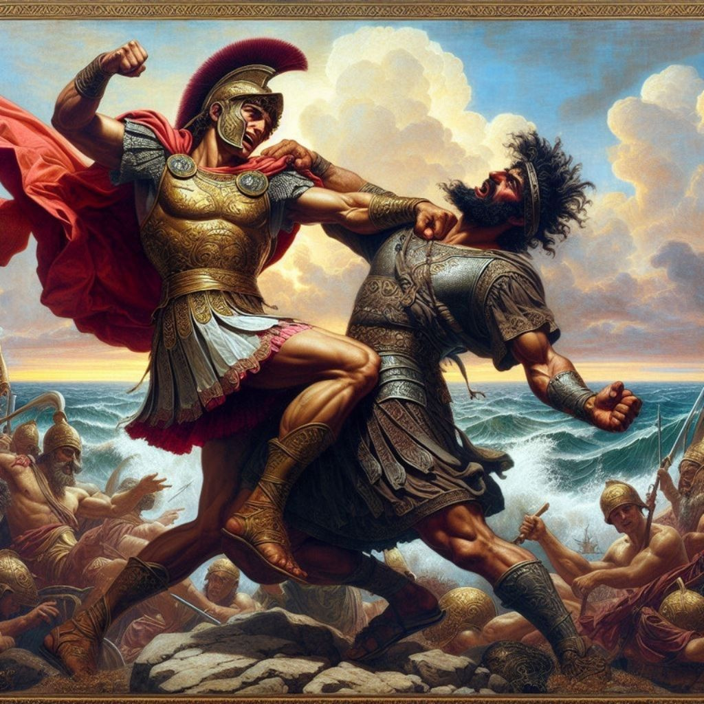

Why Alexander the Great is the GOAT @ World Domination

In one decade, conquered 2 million square miles of land in one decade without modern technology (that's about the size of the modern day continental United States)
Crushed a revolution against his Father, drove the rebels out of their main city, and renamed it after himself at age 16
Became King of Macedonia at age 20
He constantly put his life in danger by leading his men from the front
Despite being constantly outnumbered he never lost a battle
Was personally trained under the tutelage of the renowned Aristotle
Practiced "policy of fusion" where ever he conquered, meaning that he integrated and even adopted new cultures as he conquered (This was contrary to the norm in his day)
Showed utmost compassion for his men and made sure they were taken care of
Worked with leaders of lands he conquered and allowed them to govern themselves
Conquered Egypt and was crowned Pharoah at age 24
Believed himself to be a descendent of Hercules
Declared by an oracle as "Master of the Universe and a son of the Egyptian God Ammon", who the Greeks saw as Zeus. From then on Alexander saw himself as a demigod with the divine right to rule
Conquered Persia at age 25.
Married for political advantage in lands he conquered. For example, after defeating Darius III and taking his empire, he married his daughter. (what a dawg move)